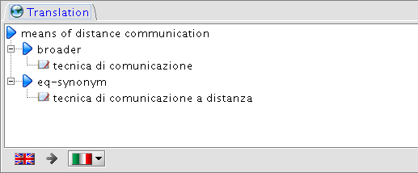

Translation
Panel

In the Translation
panel interlingual matching relations
for the selected term
with respect to other terms in the selected destination language
are shown in a hierarchical view.
Different kind of interlingual relations are considered:
- equivalent
- broader equivalence
- narrow equivalence
- eq-synonym
The translation panel is automatically selected after a local language switching